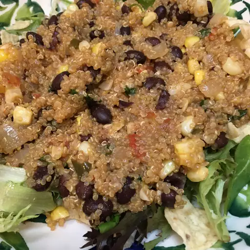

Quinoa and Black Beans

Description
This vegan quinoa recipe is a very flavorful alternative to black beans and rice. Quinoa is a nutty grain from South America.
Ingredients
- 1 teaspoon vegetable oil
- 1 onion, chopped
- 3 cloves garlic, chopped
- ¾ cup quinoa
- 1 ½ cups vegetable broth
- 1 teaspoon ground cumin
- ¼ teaspoon cayenne pepper
- salt and ground black pepper to taste
- 1 cup frozen corn kernels
- 2 (15 ounce) cans black beans, rinsed and drained
- ½ cup chopped fresh cilantro
Directions
- Heat oil in a large saucepan over medium heat. Add onion and garlic; cook and stir until lightly browned, about 10 minutes.
- Mix quinoa into onion mixture and cover with vegetable broth; season with cumin, cayenne pepper, salt, and pepper.
Bring to a boil; cover, reduce heat, and simmer until quinoa is tender and broth is absorbed, about 20 minutes
- Stir in frozen corn and continue to simmer until heated through, about 5 minutes. Mix in black beans and cilantro